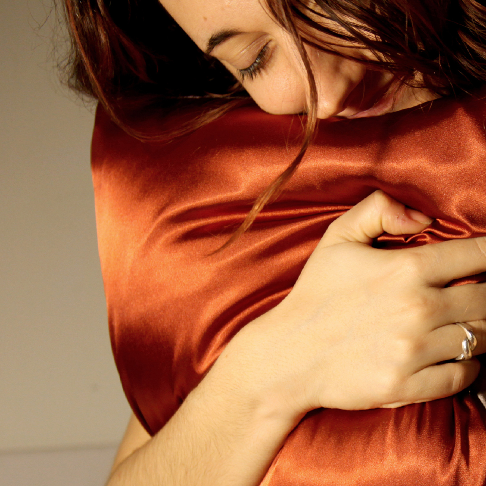
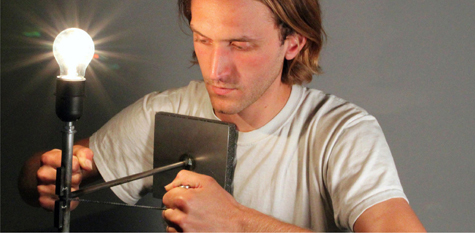
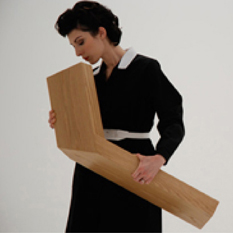
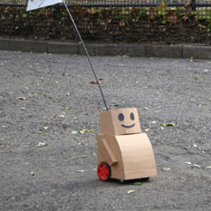
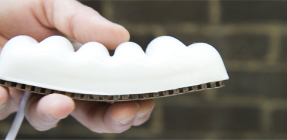
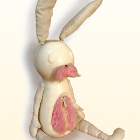
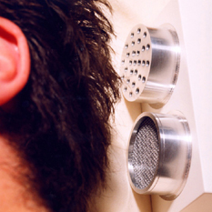
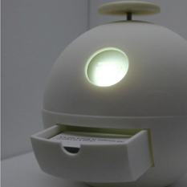
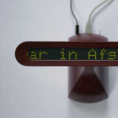

Heart Pillow | 2013
Bernardo Schorr and Maria Paula Saba
tags: haptic, connective

Strangle Poise Lamp | 2010
James Chambers
tags: haptic, connective

Robot 3: Sentinel | 2007
Anthony Dunne & Fiona Raby
tags: haptic, connective

Tweenbot | 2009
Kacie Kinzer
tags: haptic, connective

The Disgusted Object | 2012
Katrin Baumgarten
tags: haptic, connective

Mr. Smilit | 2003
Michiko Nitta
tags: haptic, connective

Accessories for Lonely Men | 2009
Noam Toran
tags: haptic, connective

Equals | 2012
Michelle Calabro
tags: haptic, connective

Prayer Companion | 2010
Interaction Research Studio
tags: haptic, connective
